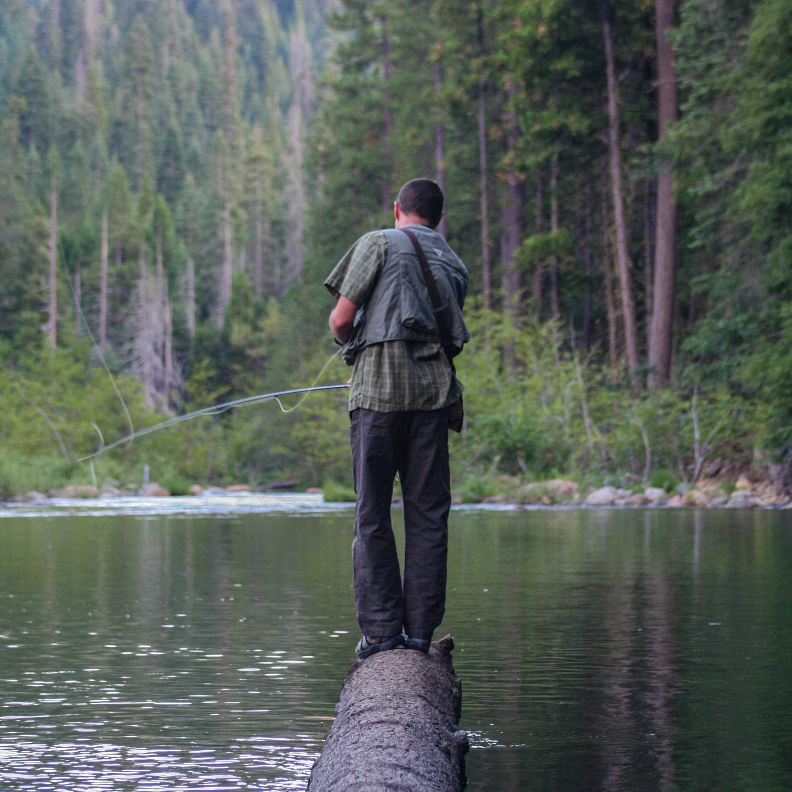
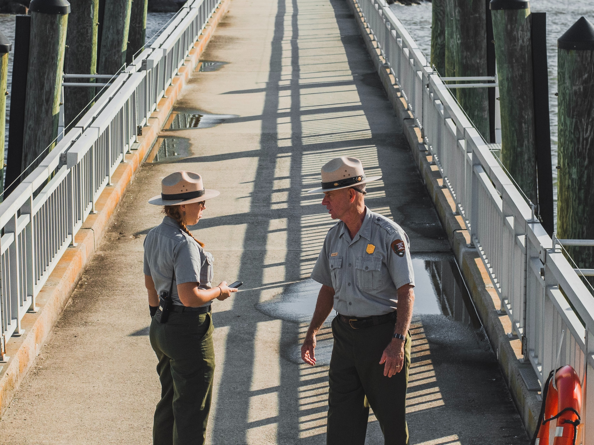

The target audience is the business community and prospective members.
Haley Miller
Haley is 26 and works at China Peak Mountain Resort where she teaches kids to snowboard and ski. She is a resident of Shaver Lake and supports the Shave Lake Chamber of Commerce because it promotes the resort she works for.
Dustin Hales
Dustin is 46 and works at Shaver Lake Marina where he rents boats and sells lake supplies such as fishing liceses, bait and tackle, water toys, souvenirs, boating supplies, and much more. He is a resident of Shaver Lake and is interested in becoming a member of the Shave Lake Chamber of Commerce.
Scenario 1
Sam owns a local busines, Shaver Lake Pizza. He is seeking contact information for the chamber to get information on how to become a member.
Scenario 2
Miranda is a local resident and is interested in what businesses have upcoming events that she can attend with her family.
Scenario 3
Tyler and his wife are a campground's host for Camp Edison. He is curious about what the chamber does and is seeking information on their purposes and goals. He wants to know why and how people becomes members.

Scenario 4
Henry is a forest ranger who works at the Dinkey Creek Ranger Station and he is a member of the chamber. An opening at his station has just become available and he is interested in making a job posting on the chamber's website.
Scenario 5
Rylie is renting a cabin on the lake for the weekend. She would like to make a complaint against a local business and would like to be reffered to another business that provides a similar service.